PyCon US - Historia en 3 actos
This page support tabs with different languages. You can select English on the tab below.
Ya finalizó la PyCon US. Tuve la duda sobre hacer un post corto o uno largo. Finalmente me incliné por el post con más detalles porque quiero poder releerlo más adelante y recordar todo lo que sucedió durante el evento, y porque creo que de esa manera otras personas podrán imaginarse mejor el evento. ¡Pasó tanto en tan poco tiempo! Me cuesta creer que fueron sólo 3 días, y no una semana entera.
Viernes:
El primer día, caminando por el centro de convenciones, me sorprendió del tamaño del evento. El espacio principal es gigantesco. Y los salones de presentación también, son verdaderamente enormes. Mi hotel -carísimo pero auspiciado por la PSF- tenía conexión directa con el centro de eventos lo que era muy cómodo.
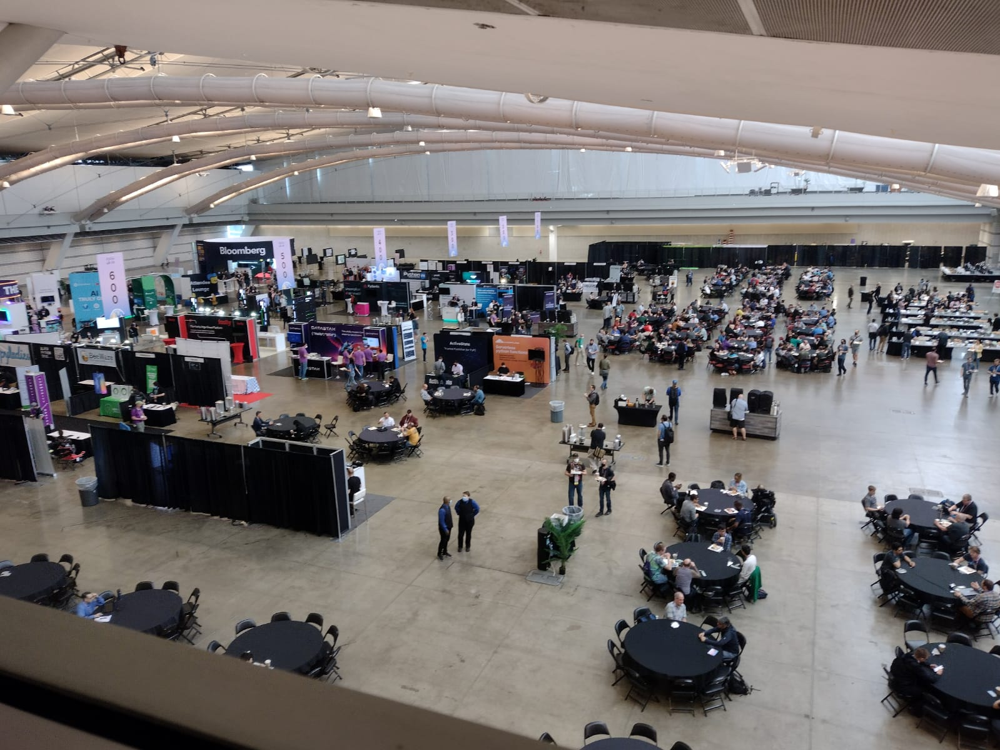
En la foto, se ve el espacio principal del piso 2 que tenía posters, booths de empresas, startups y comunidades, y el servicio de alimentación. En el mismo piso estaba el salón principal donde se hacían las keynotes y las lightining talk. En el piso 3, estaban los salones de las talks y de las charlas. Sí, hay una diferencia. Habían 4 salones para talks (charlas en inglés) y una sala para charlas (charlas en español). Además, en el piso 3 había una green room, una sala para que los speakers fueran a probar sus conexiones y practicar. Como speaker, tenía derecho a pasar ahí cuando quisiera, lo que era práctico para sacar café cuando se había agotado en otros lados.
Durante la mañana del viernes hice mi registro en el evento, y me pasaron el badge con mi nombre, stickers y polera. La polera me quedó pequeñísima (L fitted << regular M), pero afortunadamente pude cambiarla el domingo. Ya durante el desayuno, la cosa ya mostraba que no sería un evento cualquiera: a la distancia vi a Guido Van Rossum, el mismísimo creador de Python. Sí, también es humano. Increíble. Resistí el impulso de sacar una foto porque soy orgulloso (y ya me habían advertido de no paparazearlo).
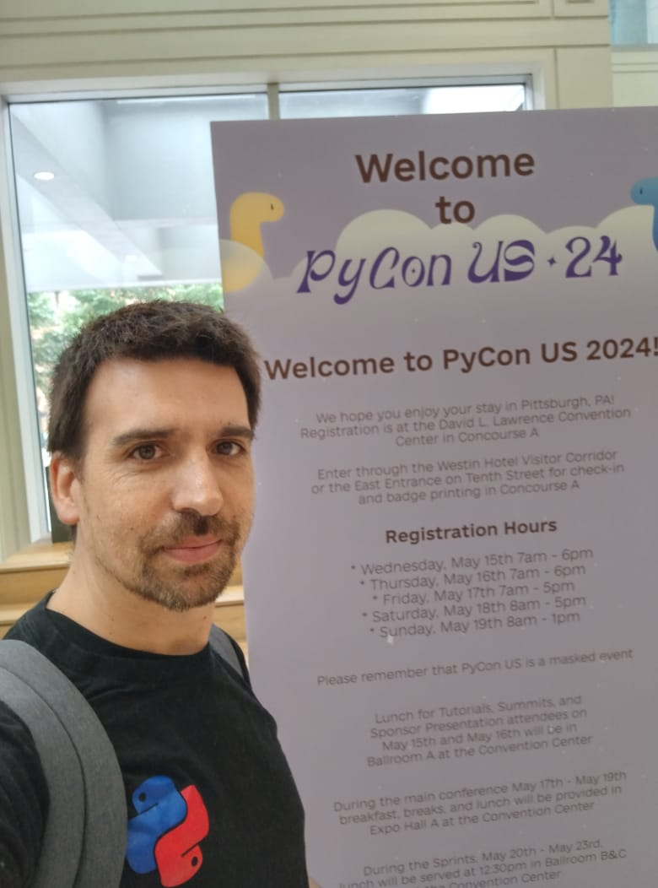
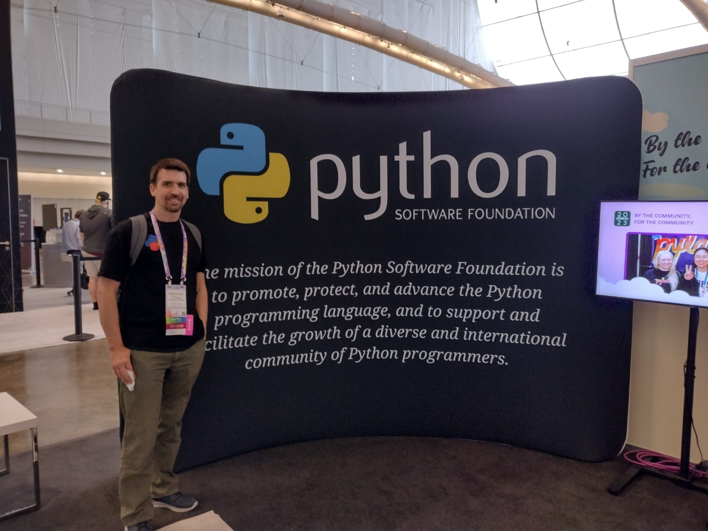
Durante la mañana me junté con Denny y Cristián, con quienes he conversado y colaborado en línea por Python Chile durante años, pero que nunca nos habíamos visto en persona. Y fue como si ya nos conociéramos y nos hubiéramos visto siempre. Estuve en el stand (booth) de Python en español, conociendo otros pythonistas, entregando stickers y recibiendo stickers. También fui a la inauguración de la Pycon, y a la primera Keynote.
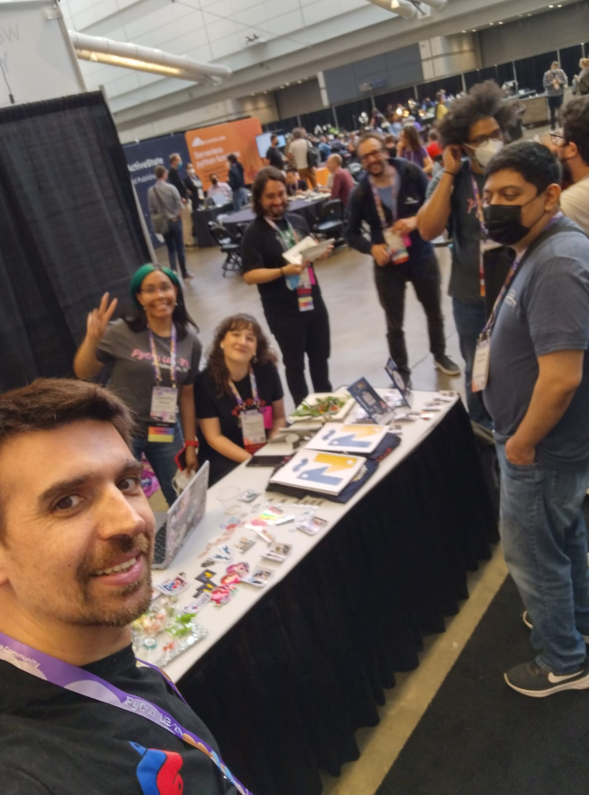
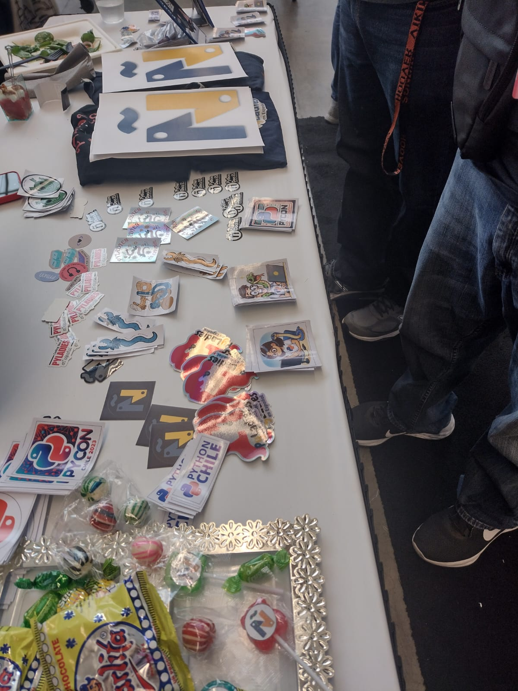
También pasé por el stand de Streamlit, y aproveché de saludar Chanin, Tony, Cristine, Ted y Krista, a quienes también solo conocía virtualmente. Me sorprendió el cariño con el que me saludaron y me recibieron. Me hubiera gustado hablar más con ellos y expresarles también mi agradecimiento, pero creo que la mezcla de cansancio, falta de sueño y estado de permanente de asombro limitaba mi capacidad de expresarme en inglés. Recién el sábado, después de charla, logré relajarme y disfrutar realmente.
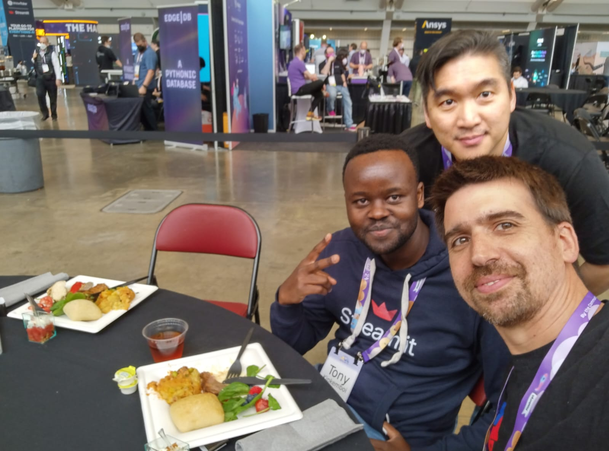
Chanin - Data Prof - me hizo una entrevista de la cual rescató algunos momentos coherentes.
Después de la keynote, me repartí entre pasearme entre los stands, recogiendo poleras y stickers, y ver algunas charlas. Había un stand que tenía unos puzzles a resolver y que regalaban unas poleras que me gustaban, pero que estaba siempre con mucha gente, así decidí pasar al día siguiente.
Durante las lightning talks, tipo 6 pm, me di cuenta que estaba agotado mental y emocionalmente. Decidí salir a caminar para relajarme y conocer un poco los alrededores, y comprar algo para la cena. Me di cuenta que necesitaba descansar para poder hacer una buena presentación al día siguiente. Finalmente terminé cenando en el hotel, a pesar de haber caminado los alrededores buscando una mejor alternativa (3 mini-hamburguesas). Ya de vuelta en la habitación, estuve ensayando y trabajando en los últimos cambios en la presentación entre las 8 y las 11 pm. Mis speaker notes tenían cada palabra que tenía que decir e incluso el momento de hacer cada click/next en la presentación. Me derrumbé en la cama y dormí profundamente.
Sábado:
El día partió temprano, con un desayuno liviano debido a mis nervios pre-presentación. Fui a la Keynote de Simon Willison, que fue increíble y recomendaré a todos apenas esté disponible en youtube. Simon explica como funcionan los LLMs de manera didáctica y divertida, destacando todas sus limitaciones pero también la increíbles cosas que nos permiten hacer (que no eran posibles antes).
A mediodía, di mi charla en inglés en un salón enorme y llenísimo. Para ser honesto, estaba increíblemente nervioso. Justo antes de subir al escenario, me di cuenta de que no tenía ni una sola línea de Python en mi presentación!!! Afortunadamente, ya era demasiado tarde para cambiar nada. Sabía que había preparado buen material y notas para apoyarme.
La recepción ha sido tremendamente positiva. Creo que Storytelling realmente conecta con la gente porque es un concepto muy intuitivo y poderoso. Todos queremos mejorar la forma en que comunicamos nuestras ideas. Escuchar a la gente decir: “Gracias por señalarme la biblioteca X, me encanta” o “Quería seguir aprendiendo, así que compré el libro Y” me hace muy feliz.
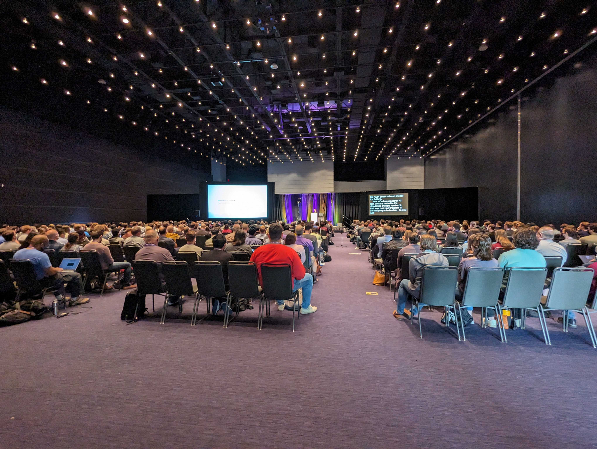
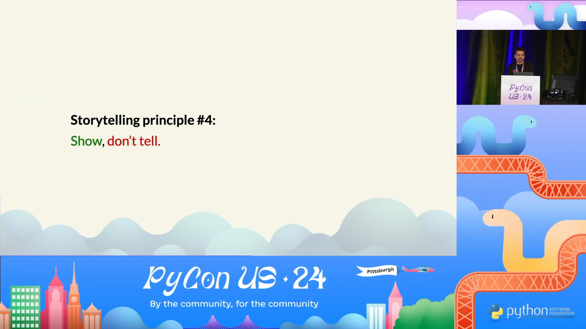
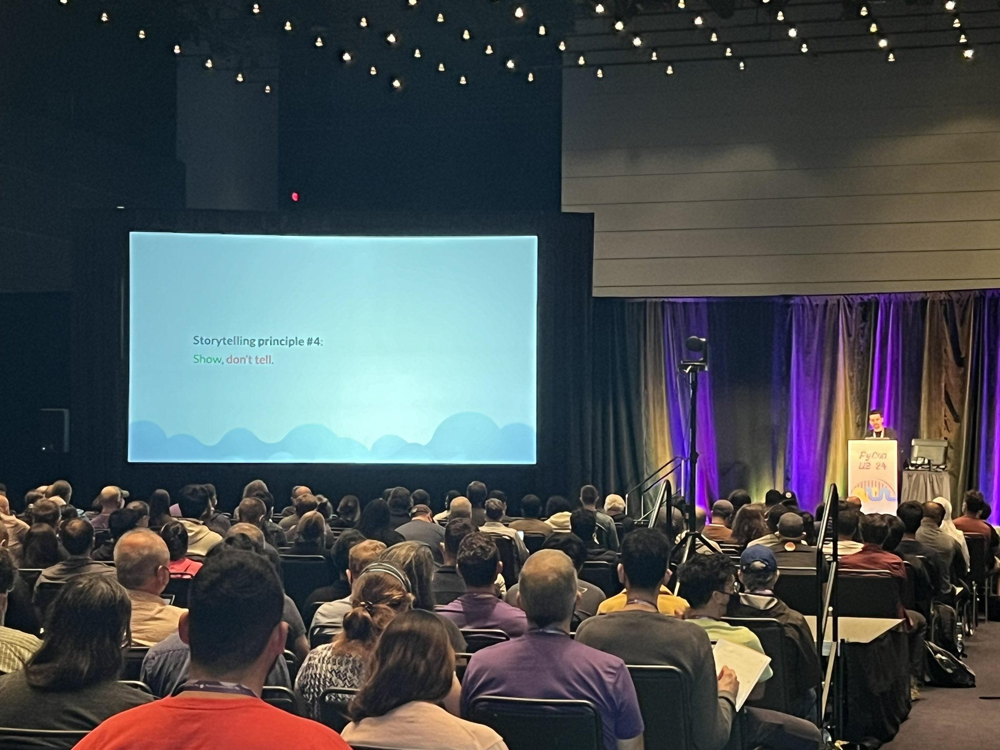
En la presentación incluí una encuesta, que respondieron +30 personas. La evaluación es enormemente positiva, y las pocas sugerencias de mejora son:
- Tengo que sonreir más
- Tengo que modular mejor y usar más tonos, no hablar tan plano.
- El final fue un poco abrupto.
- La agenda (tabla de contenidos) puede usarse para generar más interés.
Después de la charla, aproveché de relajarme y ver algunas charlas. También conversé con algunas personas que se me acercaron a comentar sobre mi presentación, a intercambiar recomendaciones de libros o simplemente a presentarse.
¿Recuerdan el stand con las poleras que quería? Por la tarde pasé y había poca gente. Habían 3 desafíos distintos, y al resolver cada uno obtenías un codigo de 4 cifras que te servía para abrir un candado en una caja. Mientras me explicaban las reglas, les pregunté en modo broma si se valía abrir el candado sin resolver el puzzle, y me miraron con cara de ¿de verdad puedes hacer eso? Así que les mostré que en realidad es super fácil (había visto un tutorial hace algunos años) y logré abrir el candado en cerca de 1 minuto. Se rieron mucho y me regalaron igual la polera (no llegué a aprender de que trataban los puzzles a resolver). Me sentí muy “street smart”, jajaja.
Como el día anterior, alterné entre ir a charlas, ir a los stands y hacer networking. Conocí mucha gente interesante. Al almuerzo, conocí un ingeniero de Duolingo que trabajaba en Pittsburgh y a un recién egresado que estaba recién aprendiendo Python. La diversidad misma de perfiles y conocimientos. Y me encanta que no haya prejuicio sobre el nivel de tus conocimientos, porque hay tanto por aprender que todos somos newbies en algún aspecto o librería de Python. Todos estamos siempre aprendiendo algo.
Volví a dejar mi computador al hotel, y me vestí de gala para la subasta de PyLadies. La “PyLadies auction” es muy divertida y ruidosa, pero al mismo tiempo elegante e íntima. Se sirve un menú de varios tiempos, con comida muy buena. Mientras tanto, se van subastando distintos items donados por gente de la misma comunidad. Python Chile había donado uno de los recuerdos de la PyCon Chile 2023 (el ascensor con manivela), que terminó vendiéndose por 425 dólares - yo sólo esperaba que fuera más que 100 dólares. Fueron 44 items a subastar, entre los cuales destacaban: una serpiente de peluche gigante (3 o 4 metros), una maleta con los logos de todos los capítulos de PyLadies del mundo, y un reloj cucú con temática de Python. En total, se recaudaron más de 60,000 dólares.
Despues del evento de PyLadies, con gente de distintas comunidades en español salimos a tomar cerveza y celebrar el cumpleaños de Cristián. Creo que volví al hotel cerca de las 2 am.
Domingo
Me levanté temprano porque me había comprometido a presentar una slide de PyDay Chile durante las lighting talk a las 8 am. Me di el gusto de partir diciendo “¿Que tal, festival?” que seguramente solo cuarentones chilenos entenderán como referencia.
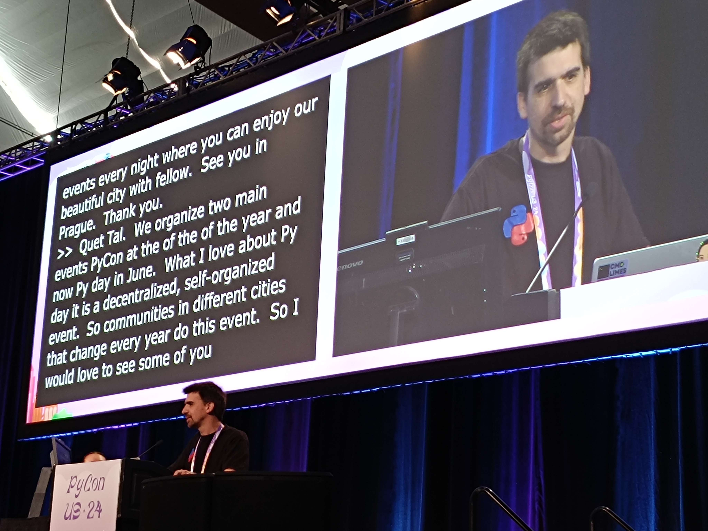
Ya el domingo se veía menos gente en el evento, muchas personas circulaban con su maletas. Ya se habían retirado los stands de las empresas, startups y comunidades, y la atención se concentraba en la feria de trabajo y los posters. Me pareció destable el trabajo sobre “algorithmic embroidery” por lo artístico y delicado del trabajo. Que increíble que puedan hacerse cosas así, vinculando lo etéreo de un lenguaje de programación con lo concreto de una tela e hilo.
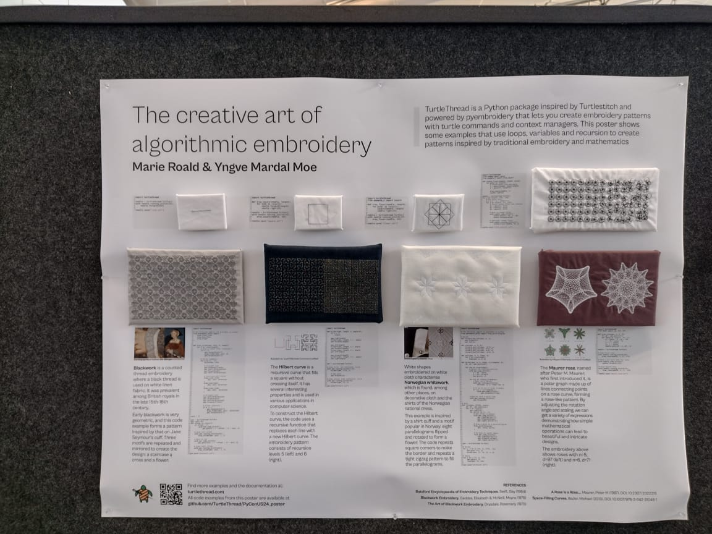
Durante la mañana vi algunas charlas, y por la tarde organicé un Open Space llamado “Data Storytelling 2: Revenge of the Audience” que había propuesto. No conocía el formato de Open Space, y es super potente. Además de las charlas ya organizadas, se ponen a disposición de los asistentes unas 10 salas de tamaño diverso (60 a 100 personas), y dependiendo del ánimo y del interés, se van proponiendo “espacios de colaboración” que pueden tener cualquier forma o intención.
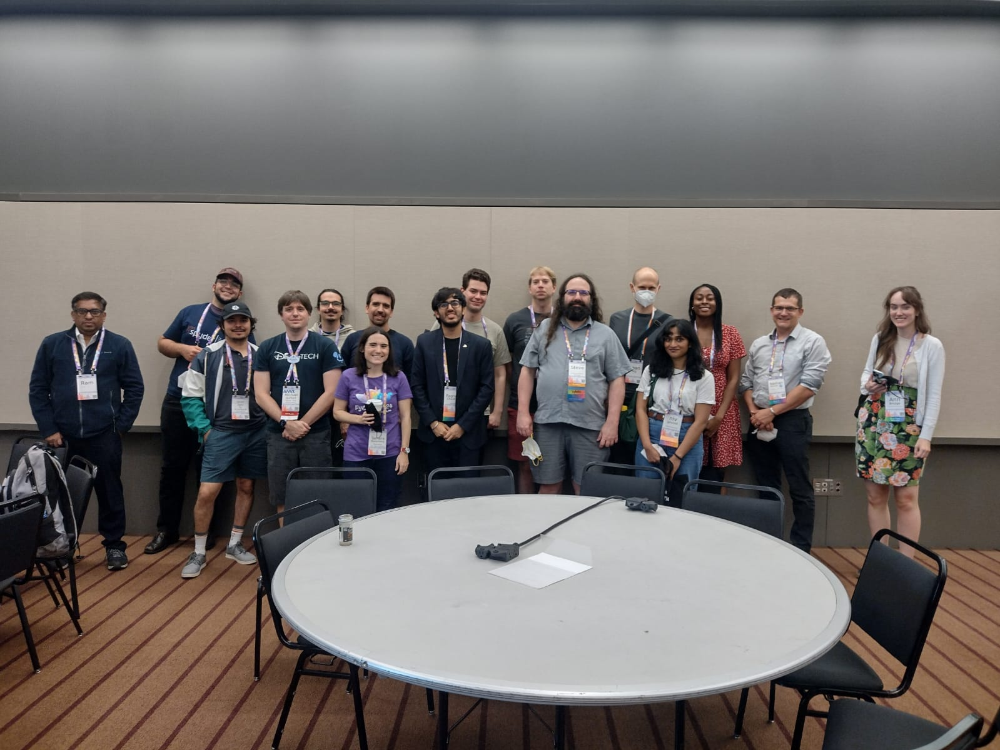
Al Open Space de Data Storytelling llegaron muchas más personas de las que había pensado, creo que fuimos como unas 15 personas. Hablamos de distintos temas:
- Librerías preferidas de visualización de datos.
- Opiniones sobre pie-chart, y otros gráficos.
- Usar renpy para hacer una presentación que sea como una conversación/manga.
- Usar la libraría manim para hacer gráficos de animaciones de matemática.
- Consejos de libros: Creativity Inc, que habla de storytelling en Pixar.
Una de las preguntas más interesante fue “¿Que pasará cuando el futuro cuando la IA generativa pueda hacer una película, comic o libro a partir de un prompt?” Esto significará que como sociedad no tengamos las mismas referencias, y que quizás no sean transferibles.
También nos sacamos fotos de la comunidad Python en español

Con Armando fuimos a cenar al Primanti Bros, una sanguchería en Pittsburg que se supone que es extraordinaria pero que palidece en comparación con los sandwichs de Chile, Perú o Argentina.
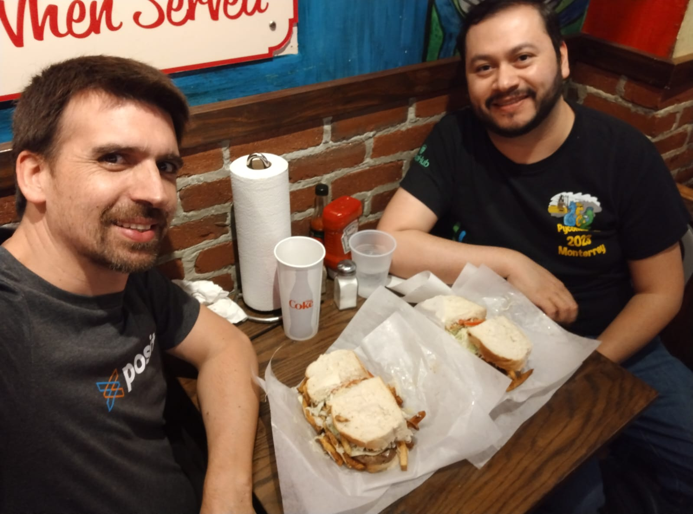
Después nos reunimos con el resto de los pythonistas en una cervecería muy cercana. Ahí conversamos, brindamos hasta que se rompieron vasos, y se regalaron los últimos stickers, peluches y poleras. Un pythonista miraba a lo lejos con cara de “yo también quiero un sticker” así que lo invité a acercarse y tomó algunos stickers para su hija, y nos pusimos a conversar. Él era norteamericano pero hablaba japonés y era muy amigo del grupo de Python Japón, a quienes me presentó, y terminó comprándome unas cervezas. ¡2 stickers por 2 cervezas, es definitivamente el mejor trato que he hecho en la vida! Jajajaja. Me sorprende lo fácil que fue conocer gente y conversar de temas técnicos, cuando normalmente me cuesta muchísimo más hablar con desconocidos o hacer networking.
Y así, llegó el momento de preparar las maletas. Adorné mi maleta con stickers de numfocus, y salí al aeropuerto pensando en que era cierto, que lo había cumplido. Mi sueño de estar en una PyCon US y presentar una charla, en inglés. Que cuando uno piensa en grande y trabaja desde y para una comunidad, se pueden lograr cosas increíbles. Y que he sido muy afortunado de poder llegar hasta aquí, y que eso también significa una enorme responsabilidad para apoyar a que otros puedan atreverse a venir.
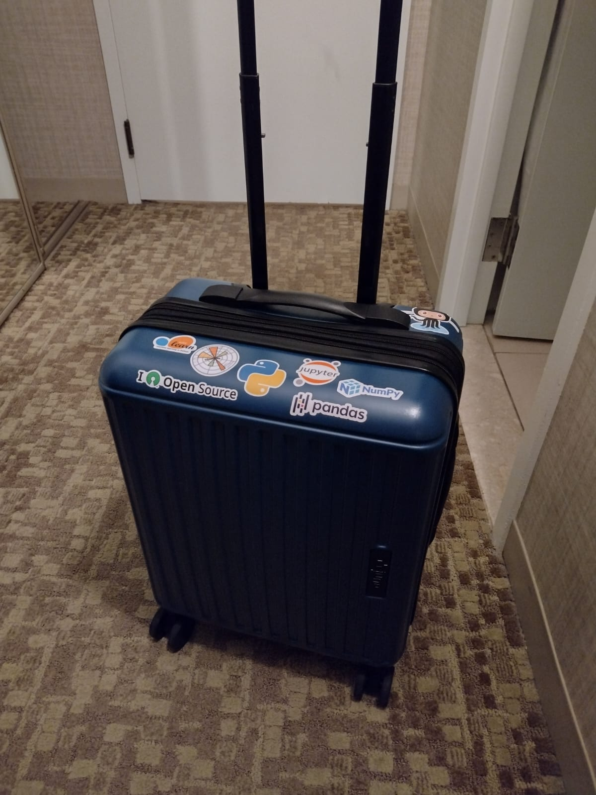
PyCon US has ended. I was unsure whether to write a short post or a long one. I finally opted for a more detailed post because: I want to be able to reread it later and remember everything that happened during the event, and because I think that way others can better imagine the event. So much happened in such a short time! I find it hard to believe it was only 3 days, and not an entire week.
Friday
On the first day, walking through the convention center, I was surprised by the size of the event. The rooms are gigantic. Truly enormous. My hotel -expensive but sponsored by the PSF- had a direct connection to the event center, which was very convenient.
In the photo, you can see the main space on the 2nd floor, which had posters, booths from companies, startups, and communities, and the food service area. On the same floor was the main hall where the keynotes and lightning talks took place. On the 3rd floor were the rooms for the talks and the charlas. Yes, there is a difference. There were four rooms for talks (talks in English) and one room for charlas (talks in Spanish). Additionally, on the 3rd floor, there was a green room, a space for speakers to test their connections and practice. As a speaker, I had the right to go there whenever I wanted, which was convenient for getting coffee when it had run out elsewhere.
In the morning, I registered for the event and got my badge with my name, stickers, and a t-shirt. The t-shirt was way too small for me (L fitted << regular M), but fortunately, I was able to exchange it on Sunday. Even during breakfast, it was clear this wouldn’t be just any event: in the distance, I saw Guido van Rossum, the very creator of Python. Yes, he’s also human. Incredible. I resisted the urge to take a picture because I had already been warned not to paparazzi him.
In the morning, I met up with Denny and Cristián, whom I have talked to and collaborated with online through Python Chile for years but had never met in person. And it felt like we already knew each other and had always seen each other. I was at the Spanish Python booth, meeting other Python enthusiasts, giving out stickers, and receiving stickers. I also attended the PyCon inauguration and the first keynote.
I also stopped by the Streamlit booth and took the opportunity to greet Chanin, Tony, Cristine, Ted, and Krista, whom I had only known virtually. I was surprised by the warmth with which they greeted me with me. I would have liked to talk more with them and express my gratitude, but I think the mix of fatigue, lack of sleep, and a constant state of amazement limited my ability to express myself in English.
Chanin - Data Prof - interviewed me trying to get some coherent thoughts.
After the keynote, I split my time between wandering around the stands, collecting t-shirts and stickers, and attending some talks. There was a stand with puzzles to solve and t-shirts that I liked, but it was always very crowded, so I decided to try again the next day.
During the lightning talks, around 6 pm, I realized I was mentally and emotionally exhausted. I decided to go for a walk to relax and get to know the surroundings a bit, and to buy something for dinner. I realized I needed to rest to be able to give a good presentation the next day. I ended up having dinner at the hotel despite walking around looking for a better option (3 mini-burgers). Back in the room, I rehearsed and worked on the last changes to the presentation from 8 to 11 pm. My speaker notes had every word I needed to say and even the moment to click/next on the presentation. I collapsed into bed and slept deeply.
Saturday
The day started early, with a light breakfast due to my pre-presentation nerves. I went to Simon Willison’s keynote, which was incredible and I will recommend to everyone as soon as it’s available on YouTube. Simon explains how LLMs work in a didactic and fun way, highlighting all their limitations but also the amazing things they allow us to do (which weren’t possible before).
At noon, I gave my talk in English in a huge, packed room. To be honest, I was incredibly nervous. Just before going on stage, I realized that I didn’t have a single line of Python in my presentation! Fortunately, it was too late to change anything. I knew I had prepared good material and notes to support me.
The reception has been overwhelmingly positive. I think storytelling really connects with people because it is a very intuitive and powerful concept. We all want to improve the way we communicate our ideas. Hearing people say: “Thanks for pointing out library X, I love it” or “I wanted to keep learning, so I bought book Y” makes me very happy.
In the presentation, I included a survey, which over 30 people responded to. The feedback is overwhelmingly positive, and the few suggestions for improvement are:
- I need to smile more
- I need to modulate better and use more tones, not speak so flatly
- The ending was a bit abrupt T* he agenda (table of contents) can be used to generate more interest
After the talk, I took the opportunity to relax and attend some presentations. I also chatted with some people who approached me to comment on my presentation, exchange book recommendations, or simply introduce themselves.
Do you remember the stand with the t-shirts I wanted? In the afternoon, I stopped by and it was almost empty. There were three different challenges, and by solving each one, you would get a four-digit code that you could use to open a lock on a box. While they were explaining the rules, I half-jokingly asked if it was allowed to open the lock without solving the puzzle, and they looked at me like, “Can you really do that?” So I showed them that it’s actually super easy to hack one of those small locks (I had seen a tutorial a few years ago) and managed to open the lock in about a minute. They laughed a lot and gave me the t-shirt anyway (I never got to learn what the puzzles were about). I felt so “street smart” haha.
I went back to the hotel to drop off my computer and dressed up for the PyLadies auction. The “PyLadies auction” is very fun and noisy, but also elegant and intimate. A multi-course menu with very good food is served. Meanwhile, various items donated by people from the community are auctioned off. Python Chile had donated a keepsake from PyCon Chile 2023, which ended up selling for 425 dollars - I only hoped it would go for more than 100 dollars. There were 44 items up for auction, including: a giant plush snake (3 or 4 meters), a suitcase with the logos of all the PyLadies chapters around the world, and a cuckoo clock with a Python theme. In total, more than 60,000 dollars were raised.
After the PyLadies event, people from various Spanish-speaking communities and I went out for beers and to celebrate Cristián’s birthday. I think I went to sleep around 2 am.
Sunday
I woke up early because I had committed to presenting a slide about PyDay Chile during the lightning talks at 8 am. I enjoyed starting by saying, “¿Que tal, festival?” which surely only forty-something Chileans will understand as a reference.
By Sunday, there were fewer people at the event, with many walking around with their suitcases. The company, startup, and community booths had already been removed, and the focus was on the job fair and posters. I found the work on “algorithmic embroidery” notable for its artistic and delicate nature. It’s incredible that such things can be done.
In the morning, I attended some talks, and in the afternoon, I organized an Open Space called “Data Storytelling 2: Revenge of the Audience” that I had proposed on the board. I wasn’t familiar with the Open Space format, and it’s super fun. In addition to the scheduled talks, about 10 rooms of various sizes (60 to 100 people) are available to attendees, and depending on the mood and interest, “collaboration spaces” are proposed, which can take any form or intention.
Many more people attended the Data Storytelling Open Space than I had expected; I think there were about 15 of us. We talked about different topics:
- Favorite data visualization libraries.
- Opinions on pie charts and other graphs.
- Using Ren’Py to make a presentation like a conversation/manga.
- Using the Manim library to make mathematical animation graphics.
- Book recommendations: Creativity Inc, on storytelling at Pixar.
One of the most interesting questions was, “What will happen in the future when generative AI can create a movie, comic, or book from a prompt?” This might mean that as a society, we won’t have the same references, and they might not be transferable.
We also took photos of the Spanish-speaking Python community.
Armando and I went to dinner at Primanti Bros, a sandwich shop in Pittsburgh that is supposed to be extraordinary but pales in comparison to the sandwiches from Chile, Peru, or Argentina.
Afterwards, we met up with the rest of the Pythonistas at a nearby brewery. There, we talked, toasted until glasses broke, and gave away the last stickers, plush toys, and t-shirts. One Pythonista was looking from afar with a face that said, “I want a sticker too,” so I invited him over. He took some stickers for his daughter, and we started chatting. He was American but spoke Japanese and was very close with the Python Japan group, whom he introduced me to, and he ended up buying me some beers. Two stickers for two beers, definitely the best deal I’ve ever made! Hahaha. I was surprised at how easy it was to meet people and discuss technical topics when I usually find it much harder to talk to strangers or network.
And so, the time came to pack my bags. I decorated my suitcase with NumFOCUS stickers and headed to the airport, thinking I had accomplished it. My dream of being at a PyCon US and presenting a talk in English. That when you think big and work from and for a community, amazing things can be achieved. And that I have been very fortunate to be able to get here, and that also means a huge responsibility to support others in daring to come as well.